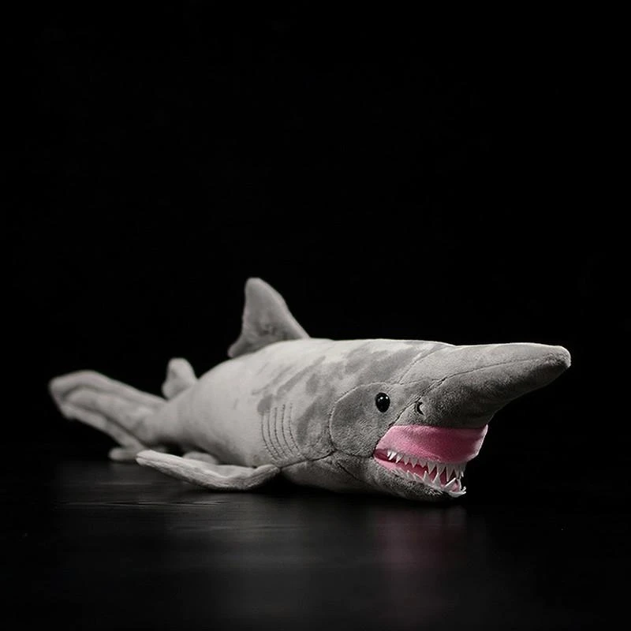
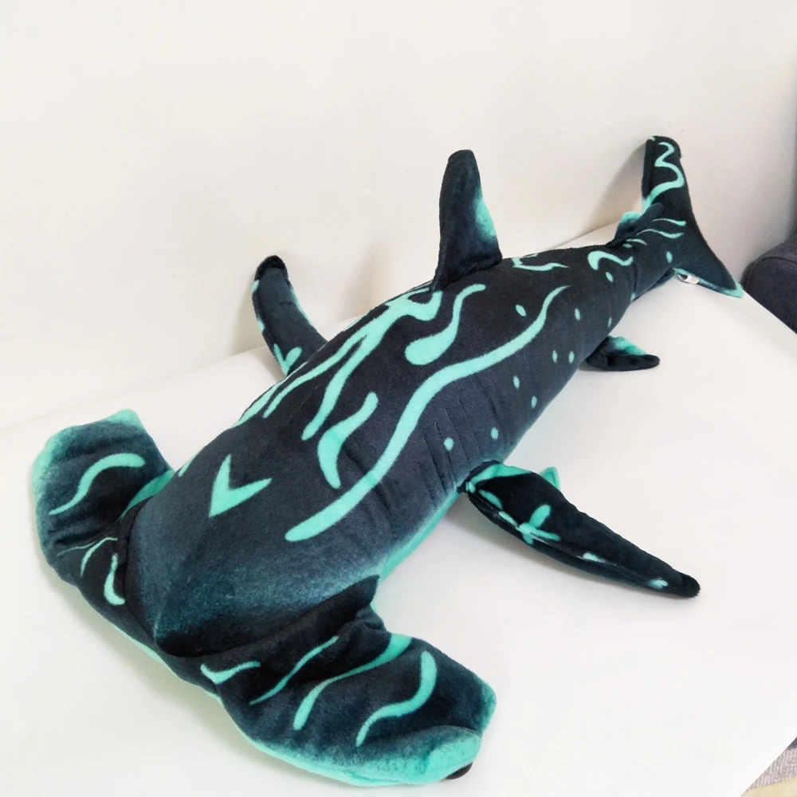
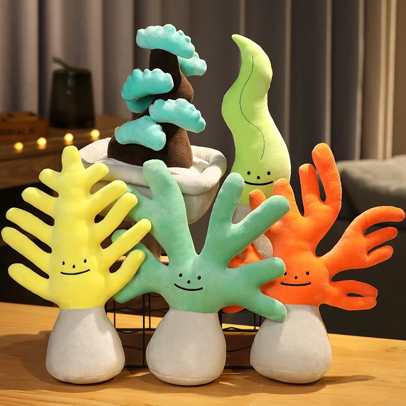
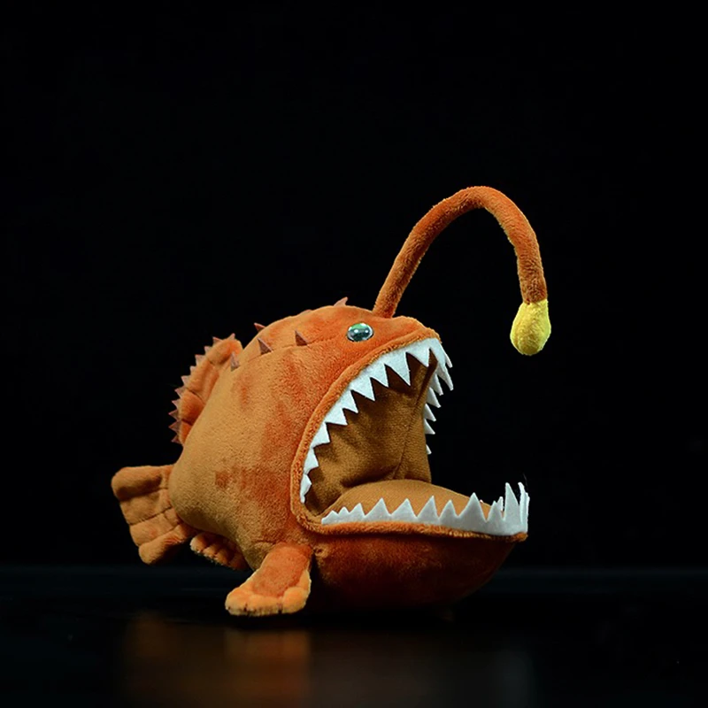
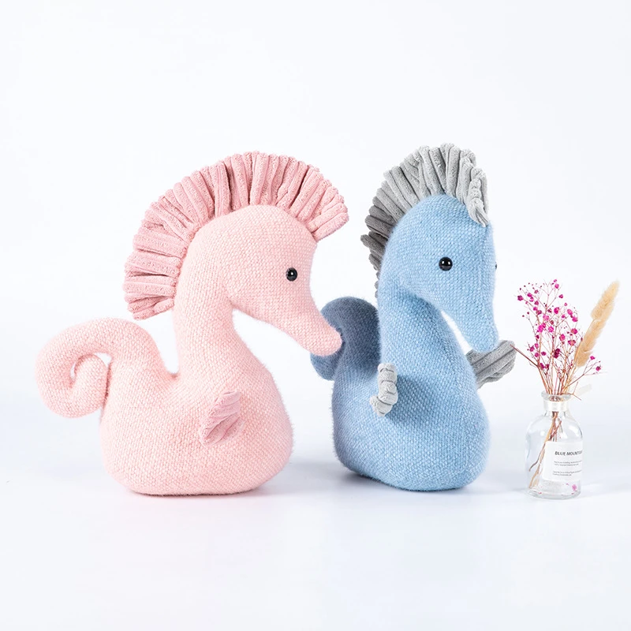
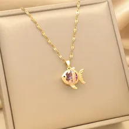
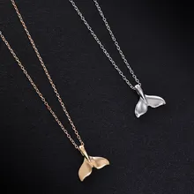
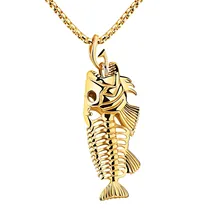
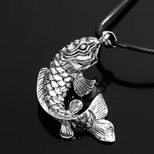
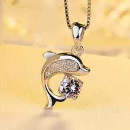

Unser Fanshop
Für die Kleinen:

Unser Plüschtierhai ist dem ältesten Hai des Zoos, Henrai, nachempfunden und wird garantiert jedes Kinderherz höherschlagen lassen!

Der perfekte Begleiter für kleine Meeresforscher: Unser Plüschtier-Hammerhai 'Hemmesy' mit breitem Hammerkopf.

Erlebe die Schönheit und Farbenpracht des Korallenriffs im Miniaturformat & garantierter Zufriedenheit mit unserem Plüsch-Koralarif.

Erleuchte dein Zuhause mit "Lampauer", dem Alpha der Fische! Mit seinem hellen Licht ist er ein echter Hingucker und zieht alle Blicke auf sich.

Die "Seepfuhrer" sind die farbenfrohen & klitzekleinen Winzlinge im Zoo, die alle Blicke auf sich ziehen, diese ähneln sehr einem Regenbogen!
Exklusive Souvenirs:

24K-Gold-Kette mit kleinem, süssen Regenbogenfisch (Rote & Pinke Kristalle)

24K-Gold-Kette o/ Weissgold-Kette mit einzigartiger, simpler Flosse eines Delfins (Grossen Tümlers)

24K-Gold-Fischskelletanhänger mit detailliertem & hochwertigem Design

Forellen-Kettenanhänger aus Echtsilber & einzigartigem Design

Delfin-Kettenanhänger aus Weissgold & VVS1 Diamant (einzigartig)